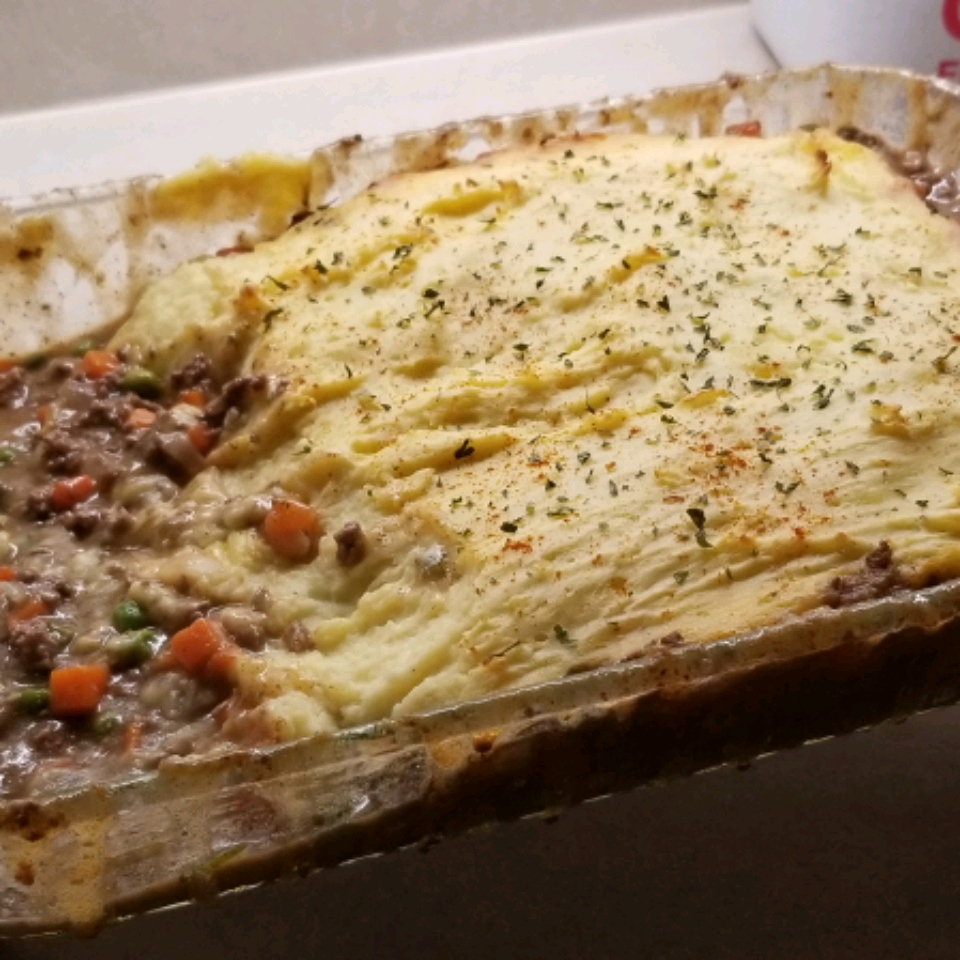

Irish Shepherd's Pie

Description
This makes a lovely alternative to the much more common corned beef and cabbage that you may have been planning for St. Patrick's Day dinner.
Ingredients
- 1 tablespoon olive oil
- 1 tablespoon butter
- 1 onion, diced
- 2 pounds lean ground lamb
- ⅓ cup all-purpose flour
- salt and ground black pepper to taste
- 2 teaspoons minced fresh rosemary
- 1 teaspoon paprika
- ⅛ teaspoon ground cinnamon
- 1 tablespoon ketchup
- 3 cloves garlic, minced
- 2 ½ cups water, or as needed
- 1 (12 ounce) package frozen peas and carrots, thawed
- 2 ½ pounds Yukon Gold potatoes, peeled and halved
- 1 tablespoon butter
- 1 pinch ground cayenne pepper
- ¼ cup cream cheese
- ¼ pound Irish cheese (such as Dubliner®), shredded
- salt and ground black pepper to taste
- 1 egg yolk
- 2 tablespoons milk
Steps
- Preheat the oven to 375 degrees F (190 degrees C).
- Place olive oil and butter in Dutch oven over medium heat. Stir in onion and ground lamb; brown the meat, breaking it up into small crumbles as it cooks, about 10 minutes.
- Stir in flour until incorporated, then mix in salt, black pepper, rosemary, paprika, cinnamon, ketchup, and garlic; cook and stir until garlic is fragrant, 2 to 3 minutes.
- Stir in water and scrape up any brown bits from the bottom of the Dutch oven. Reduce heat to medium-low and bring mixture to a simmer; cook and stir until thick, about 5-6 minutes.
- Remove lamb mixture from heat and stir in peas and carrots until combined.
- Spread lamb mixture into the bottom of a 9x13-inch baking dish and set aside.
- Place potatoes into a large pan of salted water. Bring to a boil, reduce heat to medium, and cook until tender, about 15 minutes. Drain well and return potatoes to pan.
- Mash butter, cayenne pepper, cream cheese, and Irish cheese into the potatoes. Mash until combined and potatoes are smooth. Season to taste with salt and black pepper.
- Whisk together egg yolk and milk in a small bowl; stir into the mashed potato mixture.
- Top the lamb mixture in the baking dish with the mashed potatoes and spread evenly to cover.
- Bake in the preheated oven until the top is golden brown and sauce is bubbling up around the edges, 25 to 30 minutes.